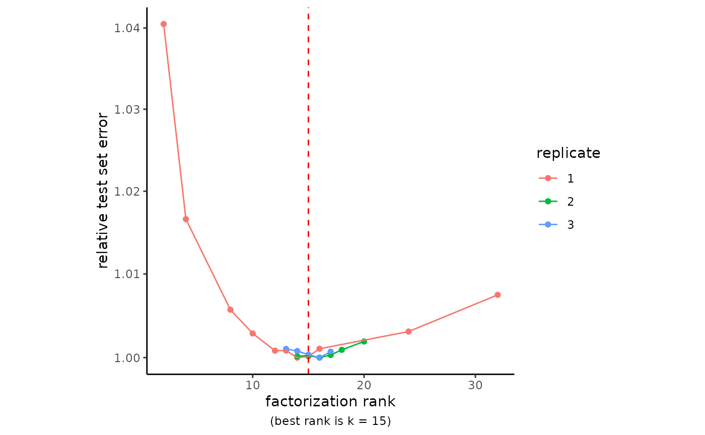
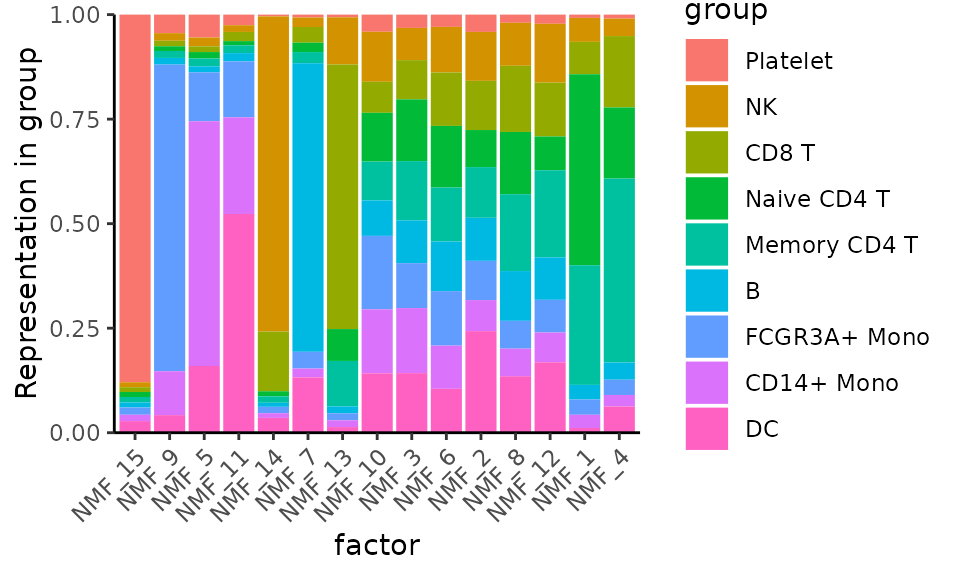
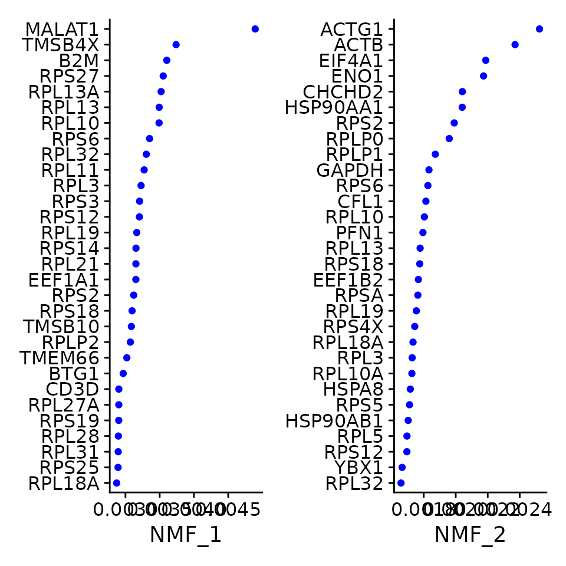
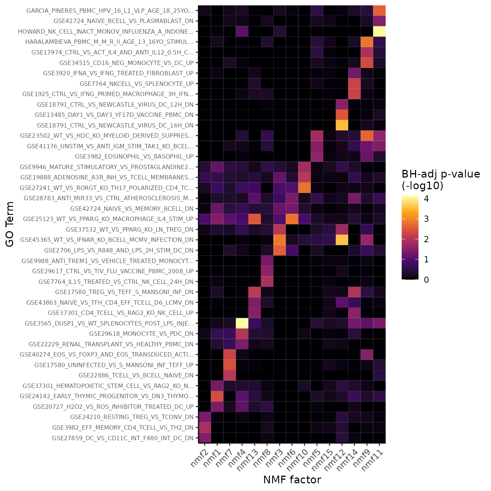
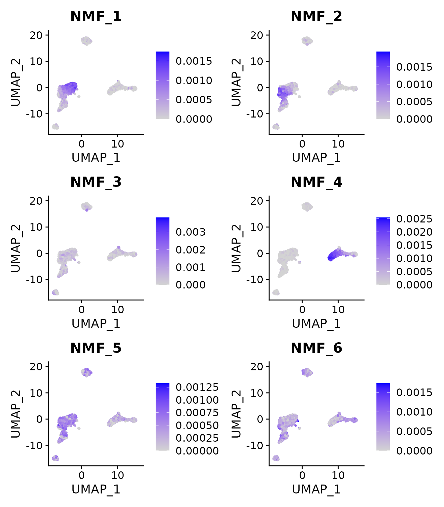
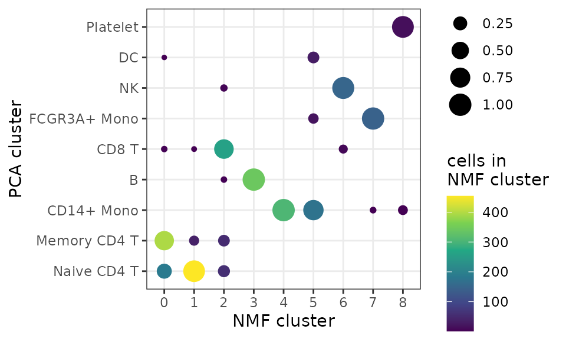
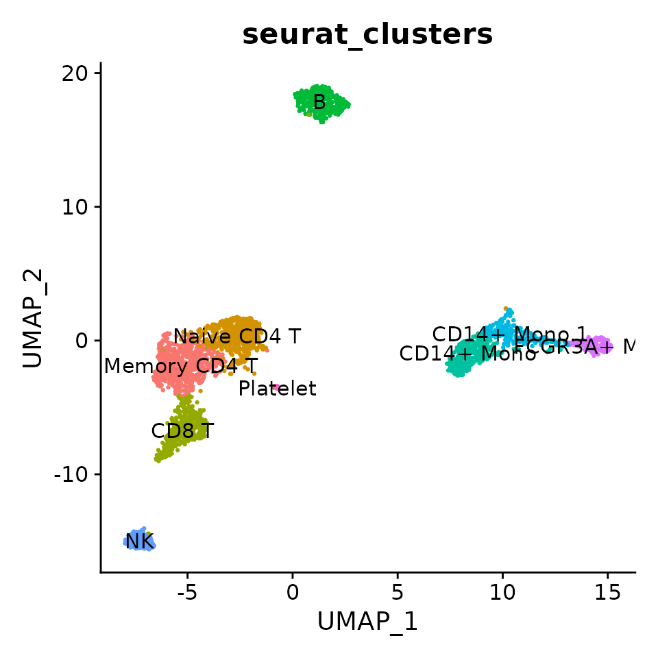

Guided Clustering with NMF
Zach DeBruine
2022-09-08
Source:vignettes/Guided_Clustering_with_NMF.Rmd
Guided_Clustering_with_NMF.RmdThis vignette complements the Seurat
Guided Clustering tutorial, but using NMF and singlet
instead.
Set up the Seurat object
This vignette introduces guided clustering and basic gene set
enrichment analysis using singlet and Seurat.
It uses the SeuratData::pbmc3k dataset and overlaps with
the Seurat introductory tutorial on [guided clustering]
(satijalab.org/seurat/articles/pbmc3k_tutorial.html) using the
SeuratData::pbmc3k dataset.
Run NMF
NMF can be run on all features using normalized counts. Here we apply standard log-normalization, which works very well, but any form of approximate variance stabilizing transformation is suitable for helping NMF find meaningful solutions. Raw counts are not suitable for NMF because the model pays too much attention to features with very high counts.
RunNMF will automatically run cross-validation on an
array of ranks that you provide, identify the best rank, and learn a
model at that rank.
Cross-validation can take some time. For large datasets, it is useful to start with a coarse-grained scan of a wide range of ranks and then focus on a narrow window of ranks with several replicates. Remember that the optimal number of NMF factors in your analysis may be significantly greater than the number of PCA components that might be used. This is a great step to run on a High Performance Computing node.
First off, basic quality control:
pbmc3k[["percent.mt"]] <- PercentageFeatureSet(pbmc3k, pattern = "^MT-")
pbmc3k <- subset(pbmc3k, subset = nFeature_RNA > 200 & nFeature_RNA < 2500 & percent.mt < 5)Now run NMF cross-validation and learn the model at the (automatically determined) best rank:
set.seed(123)
pbmc3k <- NormalizeData(pbmc3k) %>%
singlet::RunNMF(k = 5:25, reps = 3, verbose = FALSE)Plot the cross-validation results:
RankPlot(pbmc3k)
Remember to set the seed, as above, to guarantee reproducibility of your NMF model.
Visualization
Plot the representation of various metadata (i.e. Seurat-annotated cell types) in each factor:
MetadataPlot(pbmc3k, "cell_type", reduction = "nmf")
Here we simply do what the Seurat Guided Clustering tutorial does, but for NMF:
VizDimLoadings(pbmc3k, dims = 1:2, reduction = "nmf")
Gene Set Enrichment Analysis
singlet makes GSEA with fgsea and
msigdbr easy. Simply, the weights in the NMF “w” matrix are
used as rankings for terms in the enrichment analysis.
pbmc3k <- RunGSEA(pbmc3k, category = "C7", verbose = FALSE)See how GSEA results are stored in the NMF model:
## Formal class 'DimReduc' [package "SeuratObject"] with 9 slots
## ..@ cell.embeddings : num [1:2638, 1:15] 0.000469 0 0.000652 0 0 ...
## .. ..- attr(*, "dimnames")=List of 2
## .. .. ..$ : chr [1:2638] "AAACATACAACCAC" "AAACATTGAGCTAC" "AAACATTGATCAGC" "AAACCGTGCTTCCG" ...
## .. .. ..$ : chr [1:15] "NMF_1" "NMF_2" "NMF_3" "NMF_4" ...
## ..@ feature.loadings : num [1:13714, 1:15] 0 0 0 0 0 ...
## .. ..- attr(*, "dimnames")=List of 2
## .. .. ..$ : chr [1:13714] "AL627309.1" "AP006222.2" "RP11-206L10.2" "RP11-206L10.9" ...
## .. .. ..$ : chr [1:15] "NMF_1" "NMF_2" "NMF_3" "NMF_4" ...
## ..@ feature.loadings.projected: num[0 , 0 ]
## ..@ assay.used : chr "RNA"
## ..@ global : logi(0)
## ..@ stdev : num [1:15] 599930 377208 375598 340554 318461 ...
## ..@ key : chr "NMF_"
## ..@ jackstraw :Formal class 'JackStrawData' [package "SeuratObject"] with 4 slots
## .. .. ..@ empirical.p.values : num[0 , 0 ]
## .. .. ..@ fake.reduction.scores : num[0 , 0 ]
## .. .. ..@ empirical.p.values.full: num[0 , 0 ]
## .. .. ..@ overall.p.values : num[0 , 0 ]
## ..@ misc :List of 2
## .. ..$ cv_data:Classes 'cross_validate_nmf_data' and 'data.frame': 63 obs. of 3 variables:
## .. .. ..$ k : int [1:63] 5 6 7 8 9 10 11 12 13 14 ...
## .. .. ..$ rep : Factor w/ 3 levels "1","2","3": 1 1 1 1 1 1 1 1 1 1 ...
## .. .. ..$ test_error: num [1:63] 0.132 0.131 0.131 0.131 0.131 ...
## .. .. ..- attr(*, "out.attrs")=List of 2
## .. .. .. ..$ dim : Named int [1:2] 21 3
## .. .. .. .. ..- attr(*, "names")= chr [1:2] "k" "rep"
## .. .. .. ..$ dimnames:List of 2
## .. .. .. .. ..$ k : chr [1:21] "k= 5" "k= 6" "k= 7" "k= 8" ...
## .. .. .. .. ..$ rep: chr [1:3] "rep=1" "rep=2" "rep=3"
## .. ..$ gsea :List of 4
## .. .. ..$ pval: num [1:5084, 1:15] 1.46 1.65 1.84 1.79 1.54 ...
## .. .. .. ..- attr(*, "dimnames")=List of 2
## .. .. .. .. ..$ : chr [1:5084] "GSE28737_BCL6_HET_VS_BCL6_KO_MARGINAL_ZONE_BCELL_UP" "GSE9509_LPS_VS_LPS_AND_IL10_STIM_IL10_KO_MACROPHAGE_10MIN_UP" "GSE18791_CTRL_VS_NEWCASTLE_VIRUS_DC_18H_DN" "GSE40274_CTRL_VS_FOXP3_AND_SATB1_TRANSDUCED_ACTIVATED_CD4_TCELL_UP" ...
## .. .. .. .. ..$ : chr [1:15] "nmf14" "nmf9" "nmf10" "nmf13" ...
## .. .. ..$ padj: num [1:5084, 1:15] 0.721 0.863 1.022 0.981 0.78 ...
## .. .. .. ..- attr(*, "dimnames")=List of 2
## .. .. .. .. ..$ : chr [1:5084] "GSE28737_BCL6_HET_VS_BCL6_KO_MARGINAL_ZONE_BCELL_UP" "GSE9509_LPS_VS_LPS_AND_IL10_STIM_IL10_KO_MACROPHAGE_10MIN_UP" "GSE18791_CTRL_VS_NEWCASTLE_VIRUS_DC_18H_DN" "GSE40274_CTRL_VS_FOXP3_AND_SATB1_TRANSDUCED_ACTIVATED_CD4_TCELL_UP" ...
## .. .. .. .. ..$ : chr [1:15] "nmf14" "nmf9" "nmf10" "nmf13" ...
## .. .. ..$ es : num [1:5084, 1:15] 0.775 0.774 0.779 0.775 0.917 ...
## .. .. .. ..- attr(*, "dimnames")=List of 2
## .. .. .. .. ..$ : chr [1:5084] "GSE28737_BCL6_HET_VS_BCL6_KO_MARGINAL_ZONE_BCELL_UP" "GSE9509_LPS_VS_LPS_AND_IL10_STIM_IL10_KO_MACROPHAGE_10MIN_UP" "GSE18791_CTRL_VS_NEWCASTLE_VIRUS_DC_18H_DN" "GSE40274_CTRL_VS_FOXP3_AND_SATB1_TRANSDUCED_ACTIVATED_CD4_TCELL_UP" ...
## .. .. .. .. ..$ : chr [1:15] "nmf14" "nmf9" "nmf10" "nmf13" ...
## .. .. ..$ nes : num [1:5084, 1:15] 1.09 1.09 1.1 1.09 1.21 ...
## .. .. .. ..- attr(*, "dimnames")=List of 2
## .. .. .. .. ..$ : chr [1:5084] "GSE28737_BCL6_HET_VS_BCL6_KO_MARGINAL_ZONE_BCELL_UP" "GSE9509_LPS_VS_LPS_AND_IL10_STIM_IL10_KO_MACROPHAGE_10MIN_UP" "GSE18791_CTRL_VS_NEWCASTLE_VIRUS_DC_18H_DN" "GSE40274_CTRL_VS_FOXP3_AND_SATB1_TRANSDUCED_ACTIVATED_CD4_TCELL_UP" ...
## .. .. .. .. ..$ : chr [1:15] "nmf14" "nmf9" "nmf10" "nmf13" ...singlet provides a helper function for quick exploration
of GSEA results:
GSEAHeatmap(pbmc3k, reduction = "nmf", max.terms.per.factor = 3)
Cell Clustering
The pbmc3k dataset ships with clusters that have been
determined by graph-based clustering on a PCA embedding, followed by
annotation based on cluster marker genes.
We will determine clusters by graph-based clustering on an NMF embedding, and then compare them to the PCA-guided clustering.
pbmc3k <- FindNeighbors(pbmc3k, dims = 1:ncol(pbmc3k@reductions$nmf), reduction = "nmf") %>%
FindClusters(resolution = 0.5, verbose = FALSE) %>%
RunUMAP(reduction = "nmf", dims = 1:ncol(pbmc3k@reductions$nmf), verbose = FALSE)Because NMF factors are additive signals, we can also visualize their representation on UMAP coordinates:
FeaturePlot(pbmc3k, features = paste0("NMF_", 1:6))
Compare the composition of NMF clusters to Seurat PCA-guided clustering:
df <- data.frame(
"nmf_clusters" = pbmc3k@meta.data$seurat_clusters,
"pca_clusters" = pbmc3k@meta.data$cell_type)
df <- df[!is.na(df$pca_clusters), ]
df <- df %>%
group_by(nmf_clusters) %>%
count(pca_clusters) %>%
mutate(freq = n / sum(n))
ggplot(df, aes(nmf_clusters, pca_clusters, size = freq, color = n)) +
geom_point() +
theme_bw() +
labs(x = "NMF cluster",
y = "PCA cluster",
size = "proportion\nof cluster",
color = "cells in\nNMF cluster") +
scale_color_viridis_c(option = "D")
Since there is significant correspondence between PCA- and NMF-guided clusters, we can just transfer the labels based on majority overlap:
cluster_names <- df %>%
slice(which.max(n)) %>%
pull(pca_clusters)
levels(pbmc3k@meta.data$seurat_clusters) <- make.unique(as.vector(cluster_names))
DimPlot(pbmc3k,
reduction = "umap",
label = TRUE,
group.by = "seurat_clusters",
pt.size = 0.5) + NoLegend()
Compared to the PCA clustering (see the Seurat vignette), the NMF clustering more completely resolves NK cells and better resolves CD8 T-cells from Memory CD4 T-cells, but does not identify a small cluster of Dendritic Cells annotated in the Seurat vignette.
These results show how PCA and NMF can be used to achieve very similar results for cell clustering, while NMF models are interpretable and capture more information and thus better cluster resolution.